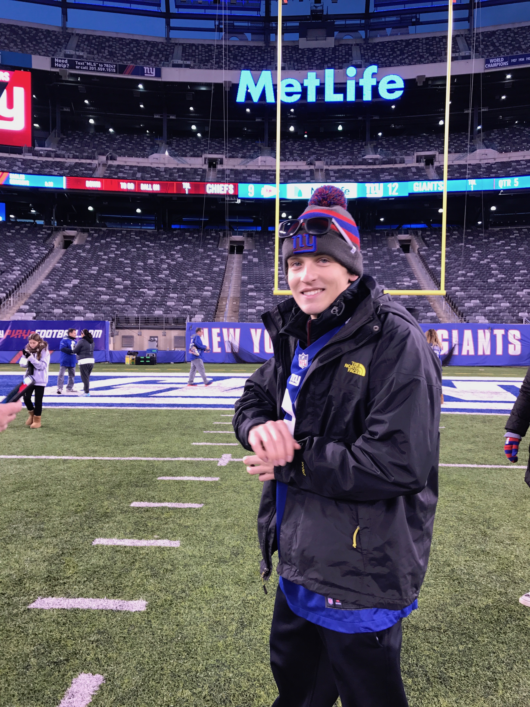

I was born and raised in Ridgewood, New Jersey. I went to high school at Don Bosco Prep, and during my time there I was the Captain of the Swim Team. I started my business Finest Kicks when I was 16 due to my passion for sneakers and business. I also created my Make Minecraft Easy Youtube channel around this time which you can view on my Projects page. After high school I enrolled at The University of Miami in the Business School. Although I always loved learning about business, after two years I decided it was best for me to switch to the Communications School, so I could focus on honing my content production skills. I love Football and I'm a diehard New York Giants fan. I also love classic rock and hip-hop music. My favorite artists are: The Beatles, Pink Floyd, Lil Peep, The Doors, and Yes
